メキシコ珍寺武者修行、次の修行地は
パツクアロという街。
ミチョアカン州の中央部に位置しており、タラスコ族が多く住む街だ。
ウルアパンでのハードな修行を終え、日の暮れた頃にパツクアロの街に入る。
規模は小さいが、植民地時代の面影を色濃く残した街並みだった。
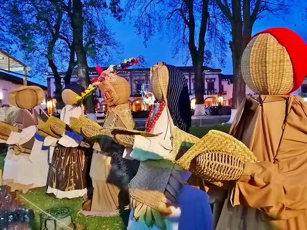
街の中心部では籠細工を模した人形が並んでいた。
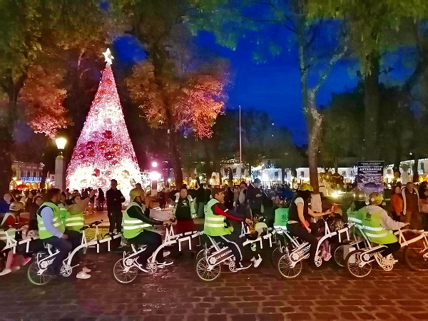
夜、ソカロを散歩していたら大勢の人が繋がった自転車に乗りながら観光するシティツアーをやっていた。
みんな楽しそう。
で、翌朝。
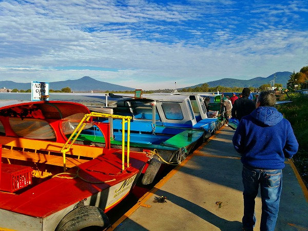
パツクアロ郊外のパツクアロ湖に向かう。
お目当ては湖に浮かぶ
ハニツイオという島だ。
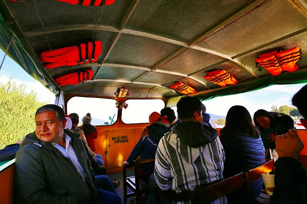
数十人乗りの小さな客船が次から次へと島に向かう。
待つことなく船に乗り込んだ。
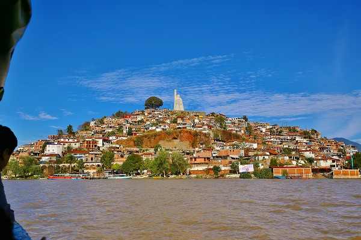
しばらくすると島が見えてくる。
家で覆いつくされた島の天辺に何か見える。
そう、それが本日の目的地だ。
で、島に上陸。
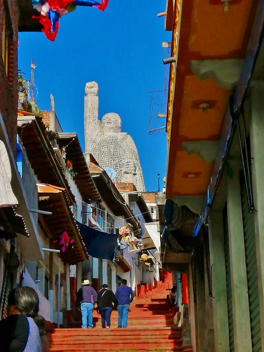
ゴチャゴチャした街並みを歩いて行く。
目指すはこちらの
ガッツポーズをした巨像。
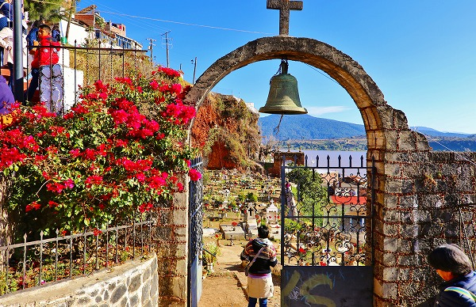
島は曲がりくねった道が続く。
途中、大きな墓地があった。
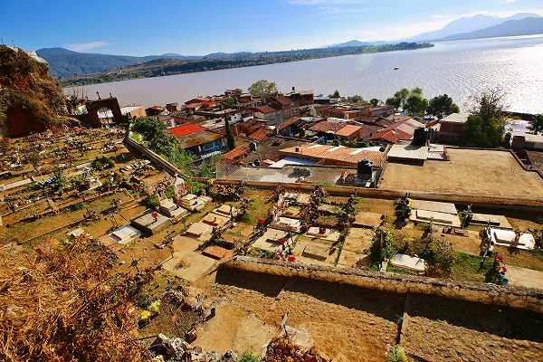
この墓地はメキシコのお盆に相当する
死者の日になるとメチャメチャ盛り上がるという。
死者に歩の盛り上がり要はメキシコ屈指だという。
死者の日を御存じなき方はディズニー映画「リメンバーミー」をば御覧くだされ。
クネクネとした上り坂が続く。
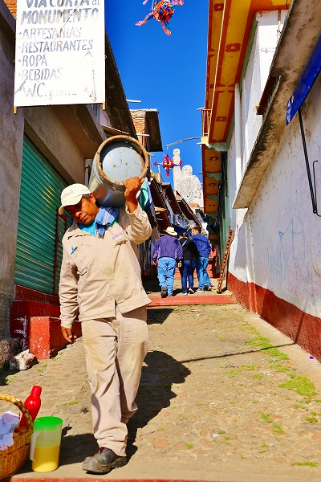
坂が多いのでプロパンガスも手運びなのだ。ご苦労様です。
そうこうしているうちに島の天辺に到着。
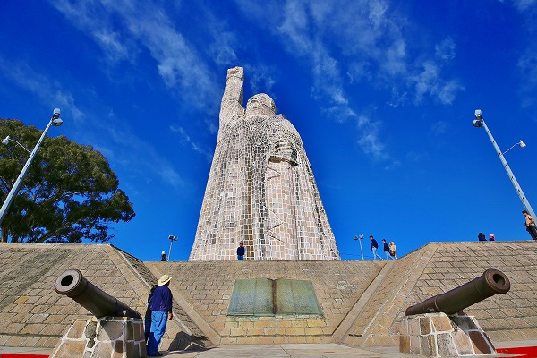
先程からずーっと見えているこの巨像、
ホセ・マリア・モレ―ロスという人物を顕彰した巨像なのだ。
ホセ・マリア・モレ―ロスとはメキシコ独立革命の英雄で、ミチョアカン州の州都、モレ―リアは彼の名を冠している程の英雄で、メキシコの紙幣にも登場する。
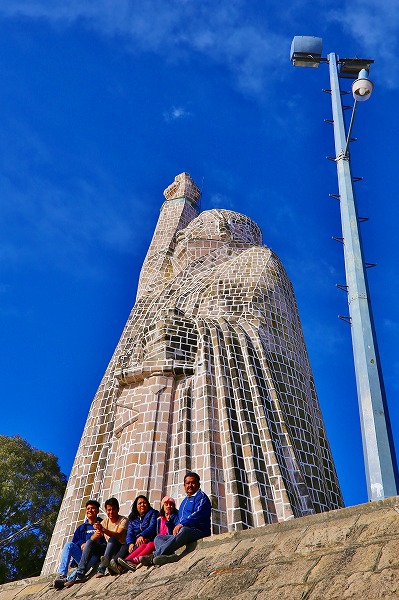
像は高さ約
47.75メートル。
日本で言えば
高崎の白衣大観音位の高さだが、島の天辺に立っているために
ラスボス感が半端ない。
というかこの島はこの像の台座としてあるのでは？と思うほど圧倒的な存在感を放っている。
ちなみに
メキシコでは2番目に高い巨像だ。
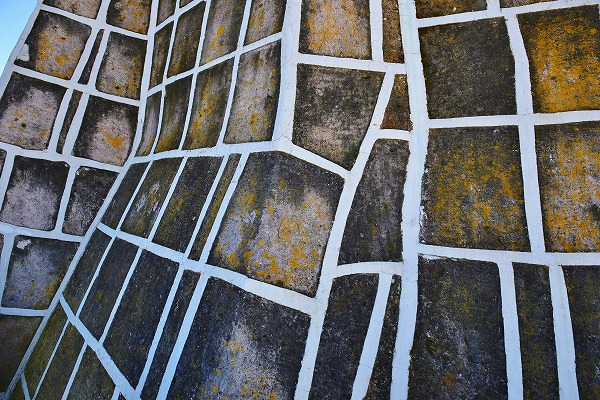
外壁は石を組み合わせたお城のような造り。
目地の部分が白い漆喰のようなもので埋められているので、遠目に見ると城壁というよりはタイルモザイクのような感じ。
中に入ってみる。

うひょー！
外側のマッシブなイメージに比べて内部は近代的かつ
複雑な構造美を強調したデザインになっている。
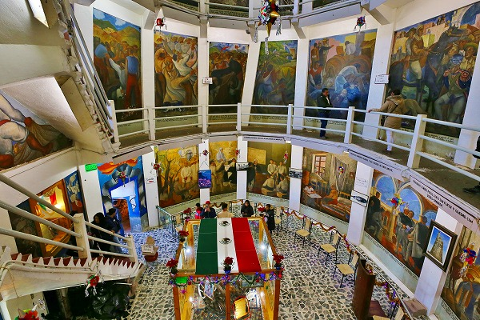
内部は巨大な吹き抜けになっており、壁面から片持ち梁の通路が延々と続いている。
竣工は1933年。
彫刻家のギレルモ・ルイスによるプロジェクト。
日本では1933年は昭和8年。
日本のコンクリ製の大仏が雨後の筍の如く大量に発生した頃とほぼ同時期だ。
この一致は偶然なのだろうか？
40メートルというサイズ感、外壁の石材を支える構造的強度、そして何より内部空間の広大さを鑑みると
日本のそれよりも一歩上を行く技術とは言えまいか。
この辺の
世界の巨像の同時代性に関しては今後の重要なテーマとなってくるであろう事のみをここで予見させていただく。
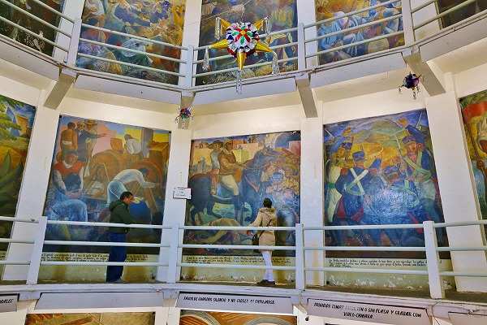
壁面にはメキシコ独立の英雄、ホセ・マリア・モレ―ロスの生涯が壁画で紹介されている。
ミチョアカン州出身のモレ―ロスはメキシコ独立運動において数々の戦績をあげるが、1815年にスペインによって銃殺刑に処された。
その人生が56枚の絵画で表現されている。
ラモン・アルバ・デ・ラ・カナルの手によって1936年から1940年にかけて制作された力作だ。
壁画の裏側はこんな感じ。
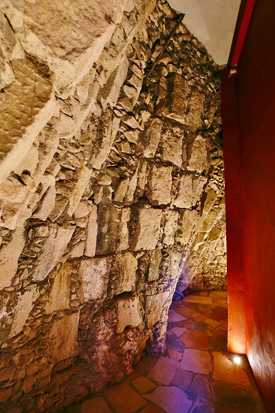
まるで日本の城郭のように大きな石と小さな石を組み合わせて壁面を構成している。
外から見たら城壁のようで、中から見たら近代的な吹き抜け空間。
古来の石造建築と近代的な変形ラーメン構造をミックスさせた画期的な構造物だと思う。
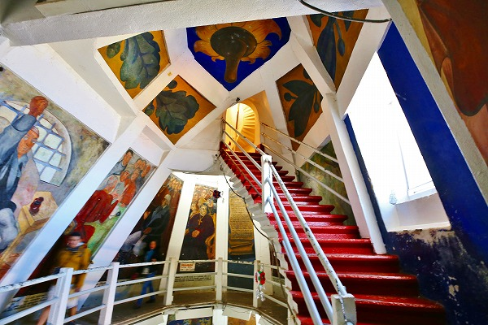
吹き抜けの最上部。
丁度首の辺りに相当するのだろう。
しかし階段はまだまだ先に続いているじゃないか！
ここからはぐっと狭い螺旋階段になっている。
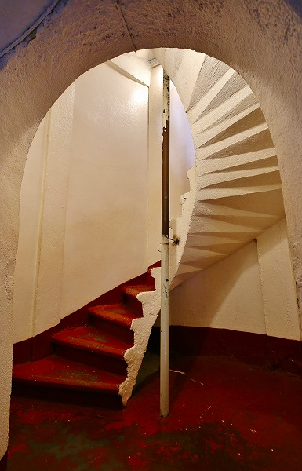
何だか
日本の大観音っぽい雰囲気になって来たじゃないか！
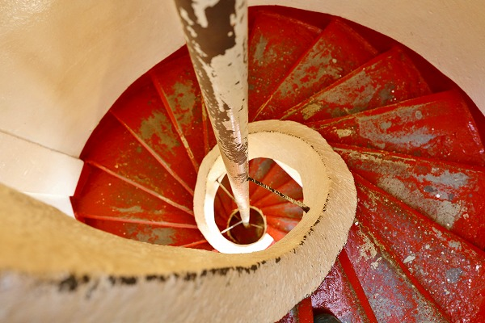
おおおおお、オラ、わくわくすっぞ！
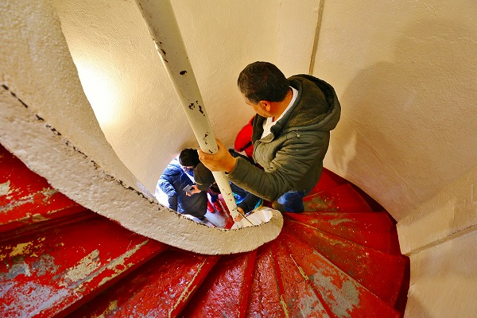
螺旋階段は狭いので上り下りの人が互いに譲り合う辺りも
東京湾観音っぽくてイイ感じ。
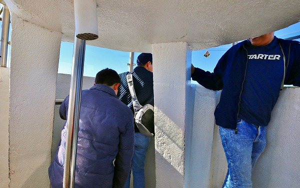
で、到達したのがこちらの展望台。
丁度ガッツポーズしている右手首辺りに相当する。
つまり右手の内側をグルグル登って来たんだな。
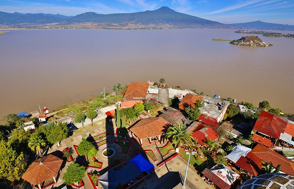
展望台からの眺め。
湖が一望できる。さらにこの巨像の影もキッチリ確認できるのだ。
いやいや絶景かな。
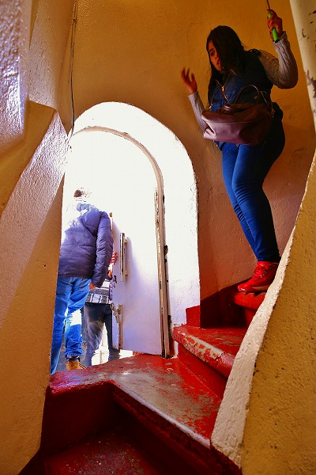
螺旋階段の途中にドアがある。
出てみると、そこは
頭部と右手の間のスペースだった。
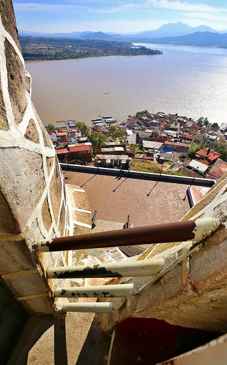
うおっ！
これまた堪らない空間ですな！
まるで
東京湾観音の脇の下を彷彿とさせるスペースじゃないか（軽く興奮気味）！！

さらに下を覗き込む。
おおおお、何とも堪らない眺めではないですかー！この辺、
大仏舎弟にしか判らない興奮スポットですなあ、くぅ～～～～！
…失礼。
結局ここから先の扉は開錠されておらず、頭部の中には入れなかったのだが、それでもこのスペースが堪能できただけで大満足であった（←変態）！
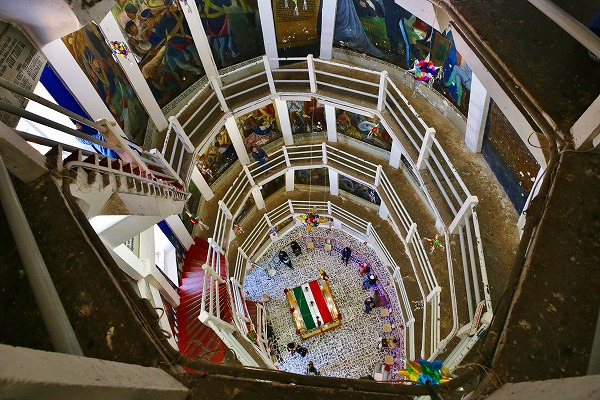
吹き抜けの最上部から１階をみおろす。
改めて凄い建造物だと思う。
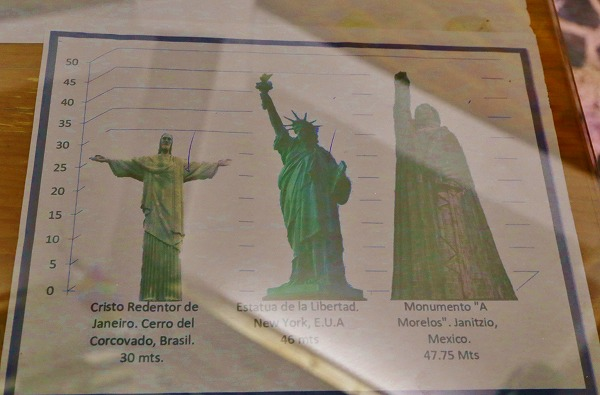
館内の案内。
リオのキリスト像、ニューヨークの自由の女神を凌いでここの巨像がいかに大きいかをアピールしている。
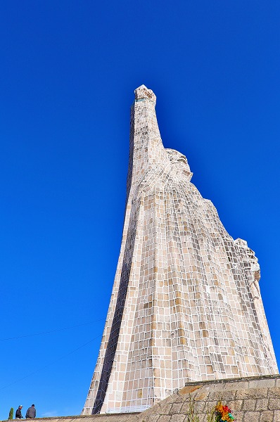
うむ。確かに大きい。
どうしても1930年前後に出来た日本の大仏、大観音と比べてしまう。
コンセプトや空間の明快さにおいてどうしてもこちらに軍配を上げざるを得ないように思うのだが、如何だろうか？
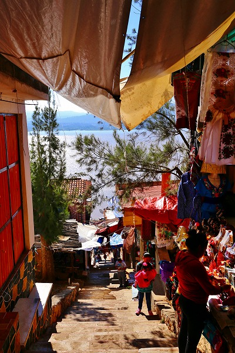
ホセ・マリア・モレ―ロスの巨像にショックを受けつつ坂道を下りる。
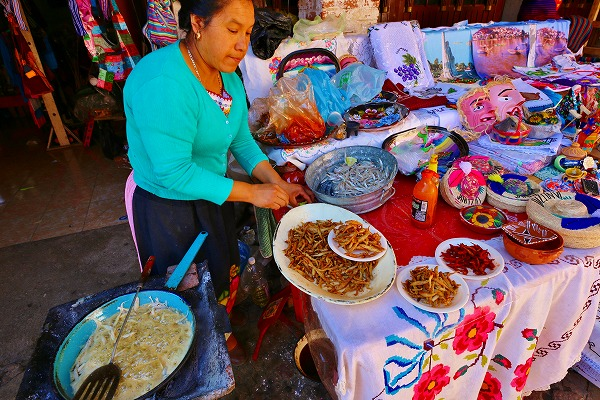
この島の名物。湖で獲れた小魚の唐揚げ。
衛生面に若干の不安はあるものの我慢できずに食べてしまった。
ワカサギの唐揚げのような味だった、美味。美味。
島から戻って
パツクアロの街を探訪。

街の中心にある
バシリカ。
1954年に建設されたメキシコでも指折りの古い教会だ。
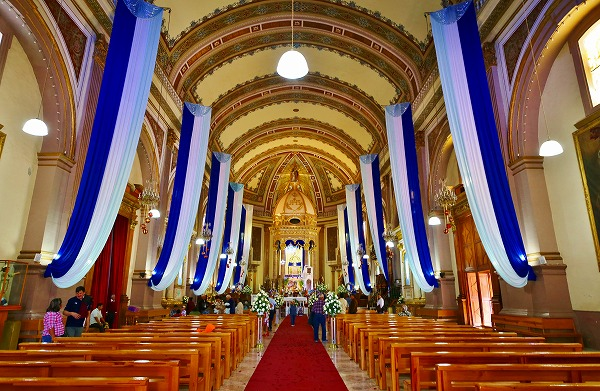
ここの聖母はトウモロコシの穂で作られたというが、近くでも見ても良く判らなかった。
しかし地元の先住民からも篤い信仰を集めているという。
お次は
民芸博物館。
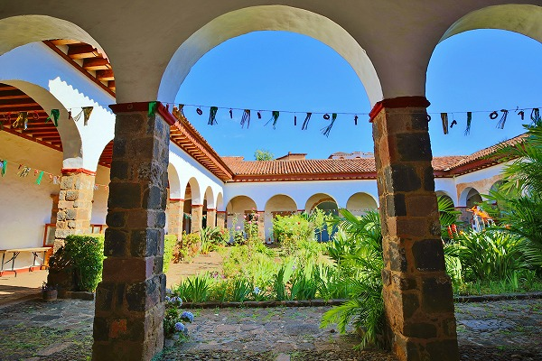
広く明るいパティオが印象的な博物館だった。
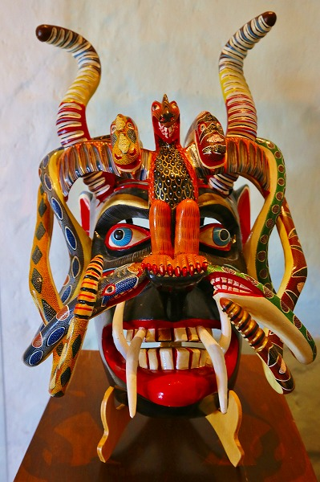
個性的なマスクがたくさんあった。
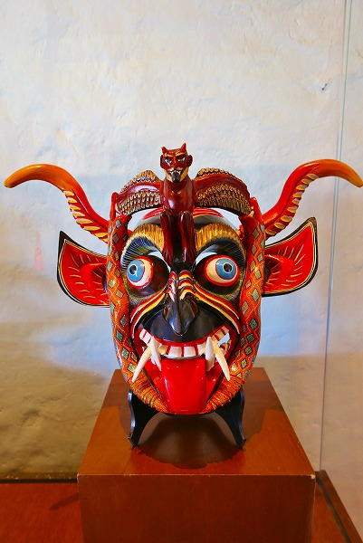
日本の面とは明らかに違う思考から発展したマスクだ。
先のモレ―ロスの巨像もそうだが、
直線的に西洋化を目指した日本と、西洋文明に対して様々な思いのあるメキシコとは文化的な表層が違ってくるのは当然の事、と思った。
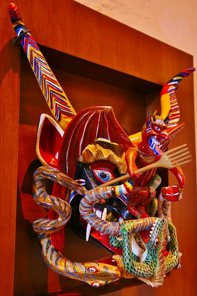
このマスクひとつ見ても
この国がいかに重層的な変遷を経て今のスタイルにたどり着いたかが良く判る。
それは中世のスペイン、ポルトガルがもたらした植民地政策が今でも世界中特に中南米、アフリカ、アジアに大きな影響を及ぼしている事の何よりの証左といえよう。
かつてのドミニコ会の修道院が今は民芸品のショッピングモールになっていた。
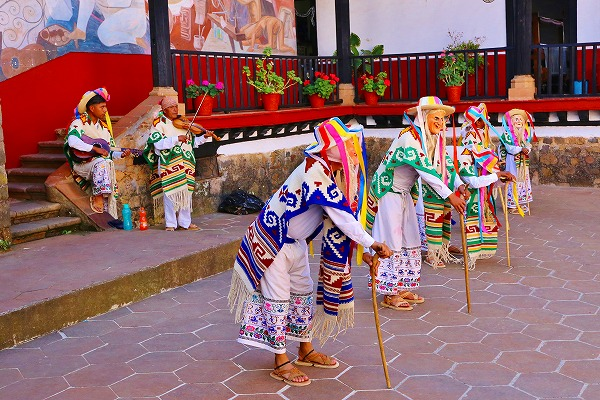
そこで行われていた
老人の踊り。
若者が老人の真似をしてジジイっぽく踊るもの。
ミチョアカン州に住んでいるプレペチェ族を象徴する芸能だ。
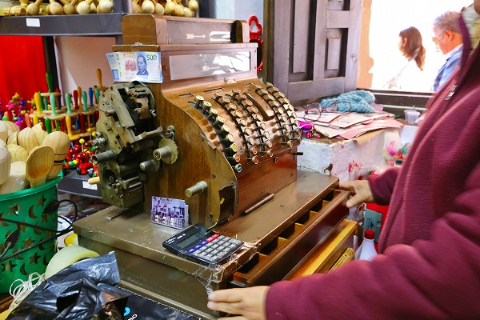
その民芸品店で使われていたレジ。
展示品か、と思うほど超レトロだった。